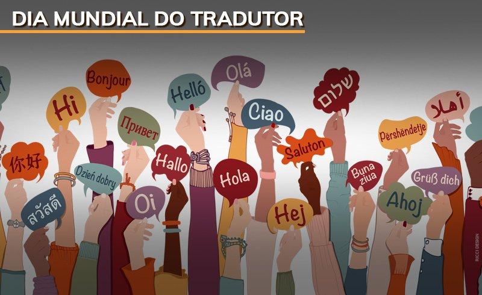
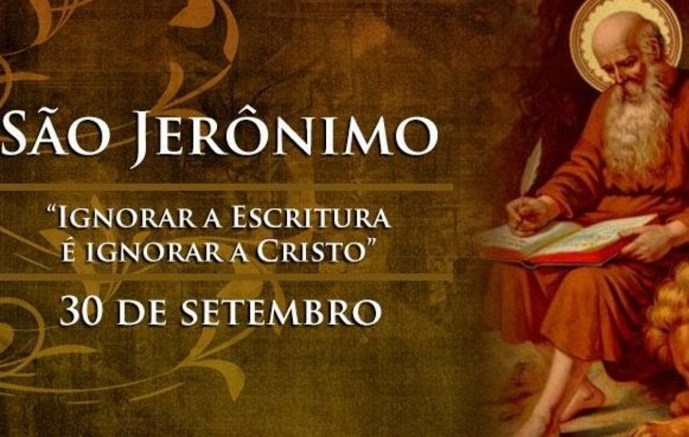
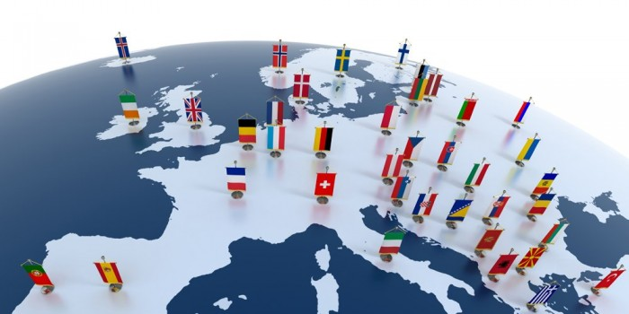

| Dia internacional da tradução | Home Sobre Personalidades |
Bem Vindo(a)!Este site celebra o Dia Internacional da Tradução, destacando a importância da tradução em nosso mundo globalizado. A tradução conecta culturas, promove a compreensão e facilita a comunicação entre pessoas de diferentes idiomas e origens. Aproveite para explorar nosso conteúdo, aprender mais sobre a história da tradução e as campanhas realizadas em todo o mundo.   |
O que é o dia da tradução?O Dia Internacional da Tradução é celebrado em 30 de setembro e tem como objetivo homenagear o trabalho de tradutores e intérpretes, reconhecendo sua importância na promoção da comunicação entre diferentes culturas e nações. A data foi escolhida em homenagem a São Jerônimo, que foi o responsável por traduzir a Bíblia do grego e do hebraico para o latim. Ele é considerado o patrono dos tradutores. Este dia serve para destacar a importância da tradução em diversas áreas, como literatura, ciência, diplomacia, negócios, entre outras. Sem a tradução, o conhecimento e a cultura de diferentes povos permaneceriam isolados. A celebração foi oficializada pela Federação Internacional de Tradutores (FIT) em 1953 e, em 2017, a ONU proclamou oficialmente o Dia Internacional da Tradução, reconhecendo o impacto que os tradutores têm na construção da paz e da cooperação internacional. A tradução é uma prática fundamental que permite a comunicação entre diferentes culturas, sociedades e povos. Ela desempenha um papel essencial na diplomacia, no comércio internacional, na ciência, na tecnologia, nos direitos humanos, na literatura e no entretenimento. Sem tradutores, o conhecimento e a cultura de diferentes regiões do mundo ficariam isolados e restritos a falantes de um idioma específico. Ler mais |
Quem foi São Jerônimo e porque ele é tão importante?
OrigensSofrônio Eusébio Jerônimo é o nome completo de São Jerônimo. Nasceu em Estridão, atual Croácia. Não se sabe a data exata do seu nascimento, estima-se que seja por volta de 347. De família cristã e rica, São Jerônimo recebeu uma sólida educação e, ajudado pelos seus pais, completou os estudos em Roma. Ali, deu-se à vida mundana, deixando-se levar pelos prazeres. Porém, logo se arrependeu, recebeu o Batismo e seguiu a vida contemplativa. Ler mais |
| Obrigado pela atenção! Fim da pagina |